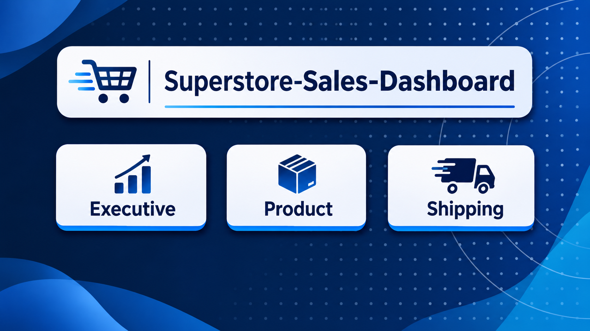
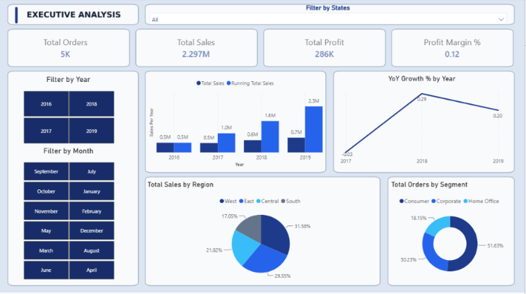
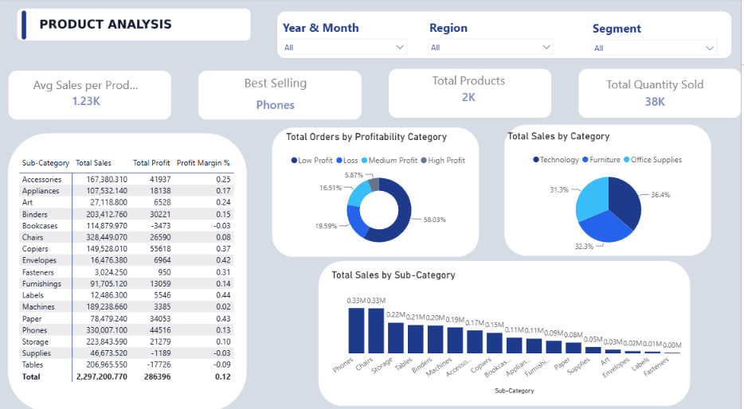
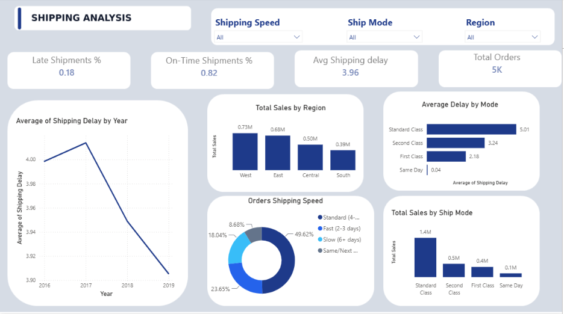
Cover PageSuperstore Sales Performance Dashboard
A three-page Power BI report on 4 years of retail orders: executive KPIs, product profitability and shipping performance.
I help small businesses, startups, and entrepreneurs make sense of their data — through analysis, visualization, and interactive dashboards built with Excel, SQL, Python, and Power BI.
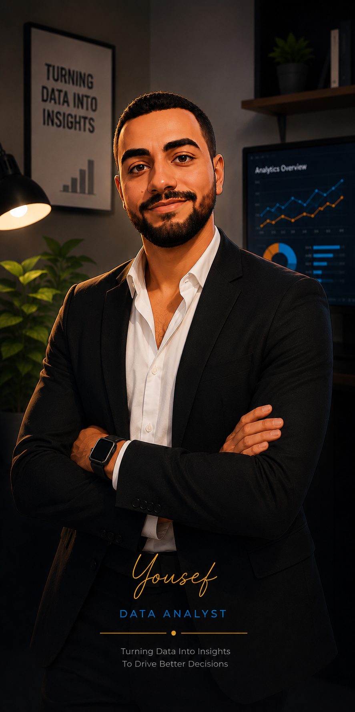
I'm Yousef Ayman Hassan, a Computer Engineering student with a strong interest in data analysis and front-end development. I enjoy working with data — discovering patterns, solving problems, and presenting results in a way that's easy to understand.
My current focus is building practical experience in data analysis using Excel, SQL, Python, and Power BI, while continuously sharpening the technical and communication skills that turn a dataset into a decision.
I work best with small businesses, startups, and entrepreneurs who have data sitting around unused and want it turned into something they can actually act on.
Six ways I can help you get from raw data to a decision you can trust.
I analyze datasets to identify trends, patterns, and opportunities that inform real business decisions.
I transform messy, inconsistent datasets into clean, structured data that's ready for analysis.
Organized Excel reports, analysis sheets, pivot tables, formulas, and dashboards built for clarity.
I query and analyze relational databases to extract the business information hiding inside them.
Interactive dashboards that make KPIs, trends, and performance easy to read at a glance.
I use Python and Pandas to clean, explore, analyze, and visualize datasets end to end.
What I use day to day, grouped by how I actually apply it.
Case studies covering Excel, SQL, Python, and Power BI — click any project for the full breakdown.




Cover PageA three-page Power BI report on 4 years of retail orders: executive KPIs, product profitability and shipping performance.
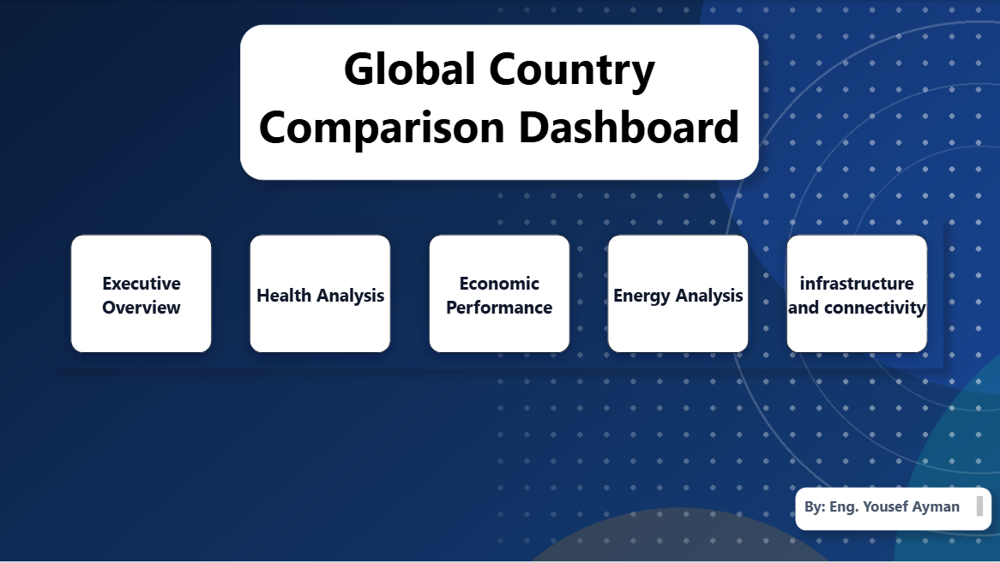
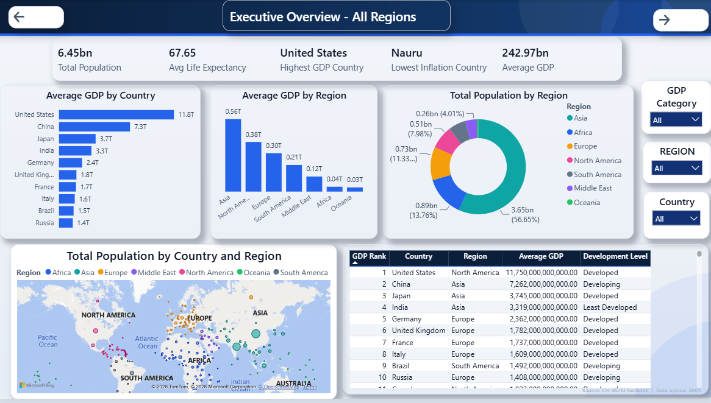
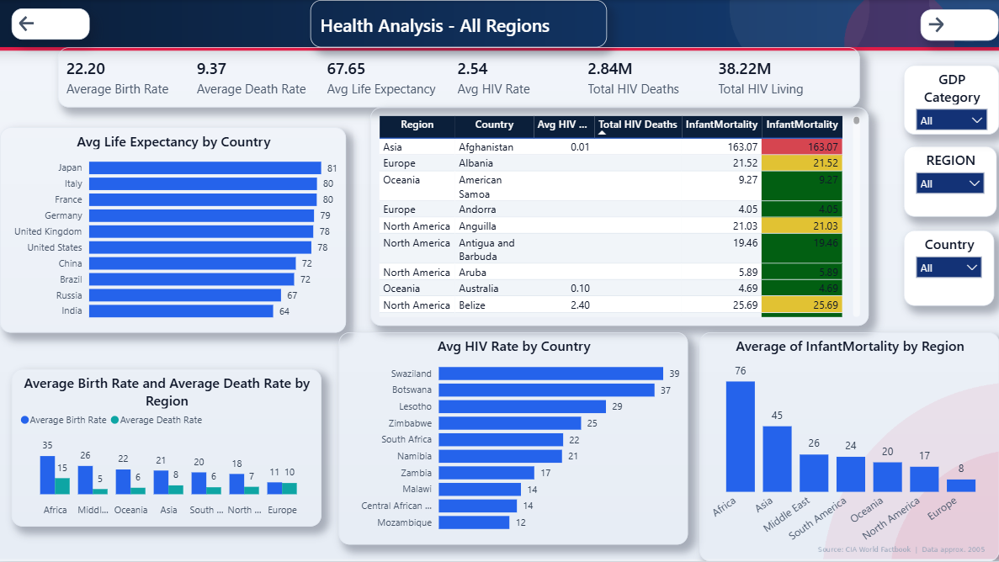
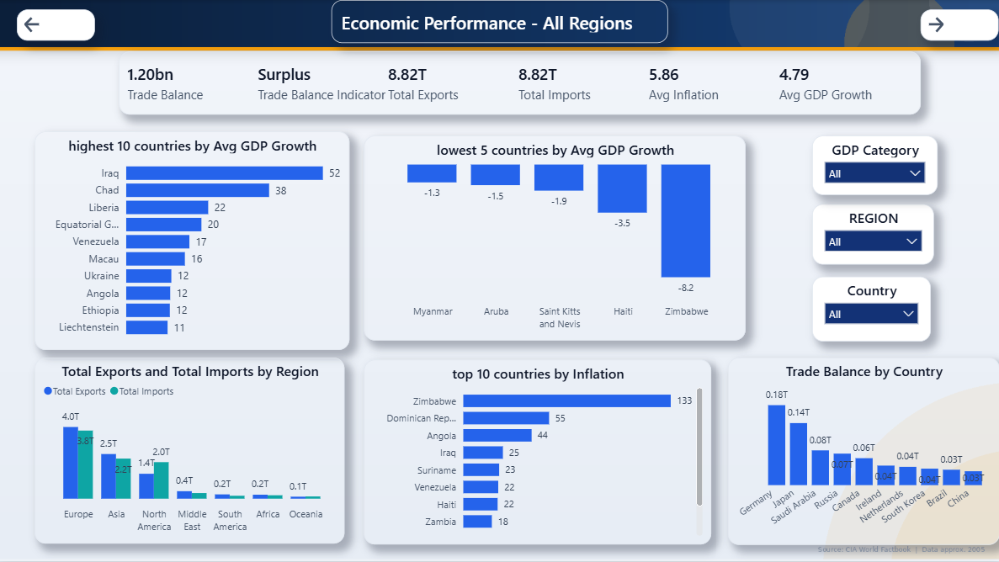
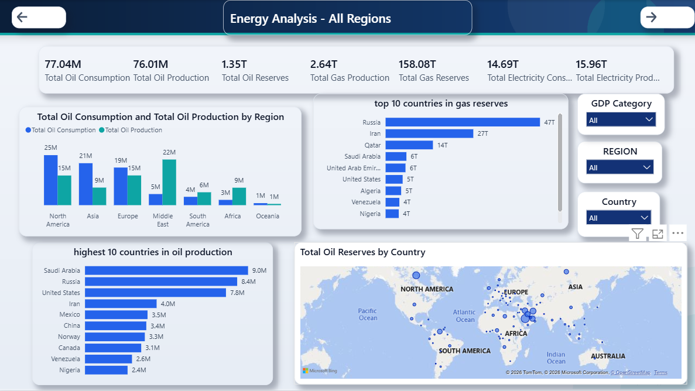
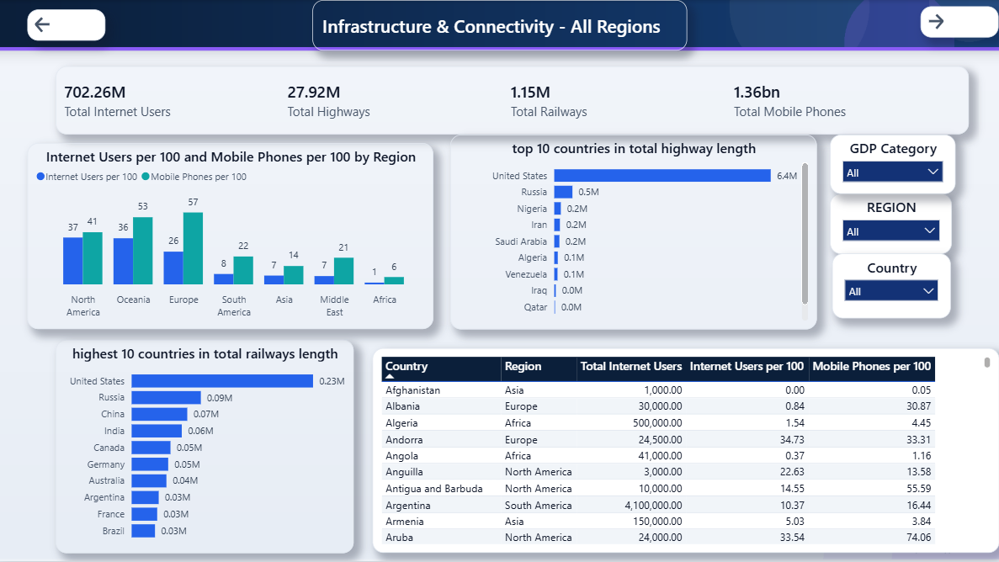
Cover PageAn 8-page Power BI report comparing about 260 countries on economy, health, energy and infrastructure, with drill-through to country details.
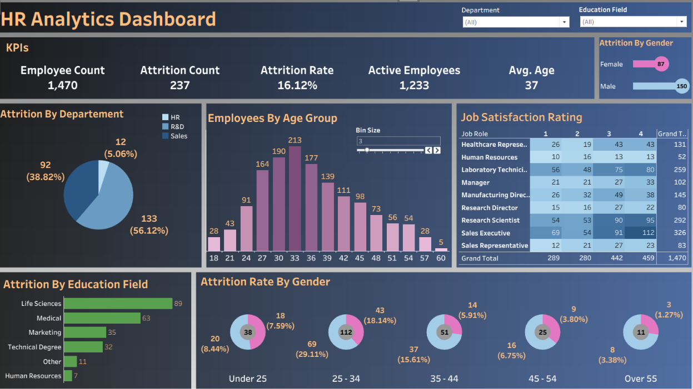
Tableau dashboardA Tableau dashboard on 1,470 employee records that shows who leaves, in which department, age group and role, and how satisfied employees are.
Training and hands-on work so far.
Hands-on training track covering the data analysis workflow — from cleaning and exploring data to building reports and dashboards with industry-standard tools.
Academic background and verified training.
Rather than list achievements that don't exist yet, here's where I'm actively building skill right now.
No client roster yet — so here's what you can actually expect when we work together.
I focus on turning data into useful insight, not just charts for the sake of it.
Findings are explained in plain language, not buried in jargon.
I check data quality and logic carefully before anything gets delivered.
I stay focused on the questions and decisions that actually matter to you.
Let's turn your data into insights that help you make better decisions.